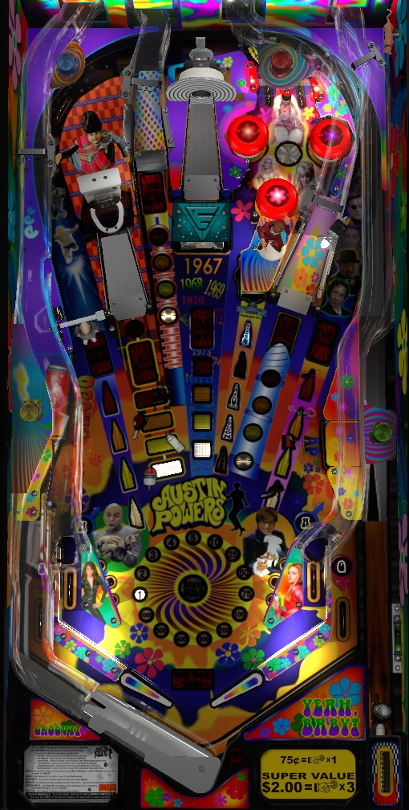

Shoot any major shot 4 times to start its mode. Fat Bastard Multiball on the near left ramp is often the easiest to start and most valuable, and can be an isolated early game strategy. Time Machine, the center shot's mode, is also a multiball. Single ball modes other than Big Frickin Laser at the back left ramp can be brought into multiball for stacked scoring opportunities. When a mode is completed, it can no longer be replayed, and you'll need to get points from other modes around the game or from the reusable Mojo Multiball, which is lit by completing the lower left standup targets and started at the saucer.
The below picture of Austin Powers' playfield was taken from the VPX recreation by Javier15, Destruk, et al.

A full plunge sends the ball to the top lanes, where one of the two top lanes is flashing. Lane change can be used to switch which lane is flashing. Making the flashing top lane scores 5,000,000 points and +5 bonus X; subsequent skill shots made in the same game each award 1 more bonus multiplier than the previous.
It is also possible to short plunge the ball so that it comes down to a flipper via the right orbit, but there is no score incentive for doing this.
The 6 major shots- both orbits, all 3 ramps, and the center Time Machine shot- each have their own mode. To indicate progress toward playing a mode, each of these 6 shots has 5 different inserts in front of it: the largest insert, and the one closest to the shot itself, is a large red insert labelled with the name of that shot's mode. The other four inserts, referred to here as progress inserts, are red, orange, yellow, and white from top to bottom.
When a mode has not been played yet, the mode name insert will be unlit, and one of the progress inserts will be flashing. Making the shot lights a progress insert and flashes the next one. When all 4 progress inserts are lit, the mode begins.
If a mode has been played already but has not been completed, the mode name insert will be lit, but the progress inserts will work the same as if the mode had not been played. Once again, lighting all 4 progress inserts starts the mode.
If a mode has been played and completed, both the mode name insert and all 4 progress inserts will be solidly lit. Completed modes are not able to be replayed until all 6 modes have been completed and Moon-Base Multiball wizard mode has been played. Making a shot that is fully lit because its mode is completed scores a bonus. This bonus starts at 1,000,000 points and increases by 250,000 for each consecutive shot, up to a maximum of 5,000,000 points. The game cycles through the adjectives Groovy, Cheeky, Smashing, Sexy, Fab, and Randy to describe these awards.
The 6 major shots and their corresponding modes work as follows.
Starting any 4 unique modes lights the saucer for extra ball.
Starting all 6 modes, but not necessarily completing all of them, lights the saucer for Virtucon Multiball mini-wizard mode, which can be redeemed anytime during single ball play. Virutcon is a 4-ball multiball with an excessive ball save (over a minute long, in my estimation). Shot any major shot when it is lit to score a jackpot. If a shot is completely unlit, no jackpot is scored. Making a shot when the mode name insert on that shot is flashing scores a jackpot and unlights the mode name insert. Shots that correspond to modes that have been completed will have their progress inserts flash as well; these shots are always available for a Super Jackpot, worth 2x the normal jackpot, regardless of whether the mode name insert is lit or not. The jackpot in this multiball starts at 5,000,000 points. Unlighting all of the mode name inserts by collecting a jackpot at all 6 shots will relight the mode inserts and increase the jackpot value by 2,000,000, allowing you to play through the sequence again at increased value. The highest that I have seen the regular jackpot go during Virtucon is 13,000,000 points, but higher is almost certainly possible. Intuitively, reaching this mode always has good value, but it can be much better value if you complete as many modes as possible before starting it.
Completing all 6 modes lights the saucer for Moon Base Multiball wizard mode, which can be redeemed anytime during single ball play. This is a 4-ball multiball with another extremely long, over-a-minute ball saver. The jackpot value starts at 10,000,000 points. Any switch in the game adds 100,000 to the jackpot. The jackpot slowly counts back down to 10,000,000 over time. Making any of the 6 major shots except for the Time Machine center shot scores the current jackpot and adds 1,000,000 to it. The jackpot value maxes out at 25,000,000 points. There is no need to relight jackpots; the two orbits and the three ramps will always give a jackpot.
The Super Jackpot starts at 5,000,000 points. Scoring any regular jackpot adds the value of that regular jackpot to the Super Jackpot. The Super Jackpot maxes out at 250,000,000 points. The number on the left side of the DMD with a spiral behind it counts down the progress toward lighting the Super Jackpot: any shot to the Time Machine or the blue post targets on either side decreases the counter by 1. When the counter reaches 0, the Super Jackpot can be collected at the Time Machine, but you can still shoot other shots to score other jackpots as well. When the Super Jackpot is collected, it resets to 5,000,000 points plus an additional 2,500,000 for each Super Jackpot collected during the current Moon Base Multiball. The countdown on the number of center shots required to light the Super Jackpot also resets as well; it is 12 hits to light the first Super Jackpot, 16 hits to light the 2nd, 20 to light the 3rd, and 24 to light any Super Jackpots past the third. Finally, collecting any Super Jackpot adds a ball to the playfield if there are not currently 4 balls in play, and re-ups the ball save for another 5-10 seconds.
When single ball play resumes, all mode progress is completely reset, and you must start over from scratch. However, it never gets more difficult to start or complete a mode; timers never get shorter, and it always takes just 4 shots to a feature to start that feature's corresponding mode.
Any other mode can be started during Mini-Me. Any mode other than Big Frickin' Laser can be started during Sub Drill. If either of these modes are brought into Fat Bastard or Time Machine Multiball, their timers will be paused for as long as multiball is in effect. If Fat Bastard Multiball, Time Machine Multiball, or Evil Henchmen is currently running, no other mode can begin.
Completing the standup targets in the lower left that spell Mojo qualifies Mojo Multiball at the saucer, which can be cashed in at any time during single ball play. Mojo is a 2-ball multiball. To begin, a Dr. Evil bash toy will rise up in front of the center ramp. Each hit to this toy scores a jackpot, which starts at 1,000,000 points and increases by 100,000 each time it is collected. After 10 hits, Dr. Evil lowers, and all 6 major shots will be lit. One random shot of these six is worth a Super Jackpot, worth 6x the current jackpot value; the others all award regular jackpots. Collecting the Super Jackpot re-raises Dr. Evil and repeats the sequence at its increased value. The regular jackpot in Mojo Multiball maxes out at 3,000,000 points.
When lit, Mystery awards are collected at the saucer. If the saucer is not lit for a Mystery award (by the blue insert closest to the saucer), it can be lit by shooting the two lower right standup targets, which award letters in the words Austin and Powers. The lower right targets award progressively fewer letters in Austin Powers with each hit as the Mystery is redeemed more and more times. The Mystery award will show 4 options, then select one. A list of awards I've seen is as follows:
This list may not be exhaustive.
The in/out lanes spell Shag. Roll through an unlit lane to light it. Lane change is available to rotate which lanes are lit. Spelling Shag scores 3,000,000 points and qualifies various awards.
The exact number of spellings required for each award may be able to be adjusted automatically or by operator settings.
Every switch in the game awards one Flower, which is worth 1,000 points in base bonus. The wheel in the center of the table counts how many Flowers you have. The wheel can only display up to 2,675 Flowers, but the game can keep track of at least 7,500. Completing the two top lanes increases the bonus multiplier by 1, Making a skill shot or earning the Bonus X mystery award advances the bonus multiplier by 5. The maximum bonus multiplier is 99x. Bonus can be collected mid-ball via a Mystery award. Hold Bonus is available as yet another Mystery award, or as one of the awards for completing the Shag bottom lanes. Earning Hold Bonus outside of the final ball of the game will carry over your base bonus, but not your multiplier; however, earning Hold Bonus on the final ball of the game will recollect the entire bonus, including whatever multiplier you earned on that final ball.
Bonus tends not be particularly valuable outside of exceptionally long balls.
| If you need... | Try... |
| 1,000,000 points | ...starting any mode, or shooting any feature corresponding to an already completed mode. |
| 5,000,000 points | ...making a solid attempt at any mode, or starting and playing Mojo Multiball. |
| 20,000,000 points | ...starting and playing Fat Bastard Multiball, Time Machine Multiball, or Big Frickin' Laser, if they are available. If not, just try to start every mode at least once to progress to Virtucon mini-wizard multiball. |
| 100,000,000 points | ...playing Fat Bastard Multiball for as long as you can. If Fat Bastard Multiball has been completed, you'll either need to really chop wood during a long Mojo Multiball or play Virtucon mini-wizard multiball and earn a few Super Jackpots. |
| 500,000,000 points or more | ...focusing heavily on completing as many modes as possible. If you haven't played Virtucon Multiball yet, completing modes first will ensure that more shots have higher value during Virtucon. If you have played Virtucon already, completing modes will progress you toward Moon Base Multiball wizard mode. You'll likely need to play one or both of these wizard features to rack up a high-9- or 10-figure score. |